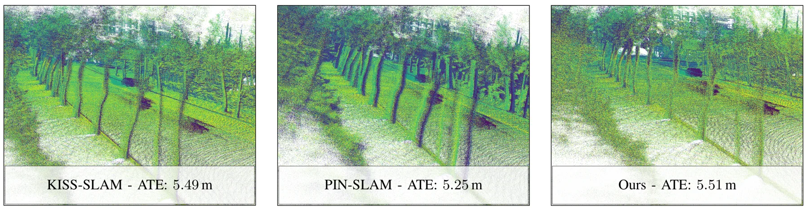
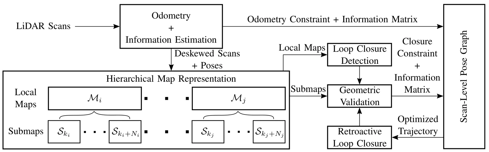
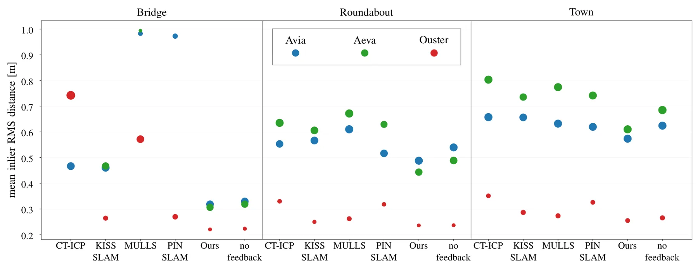
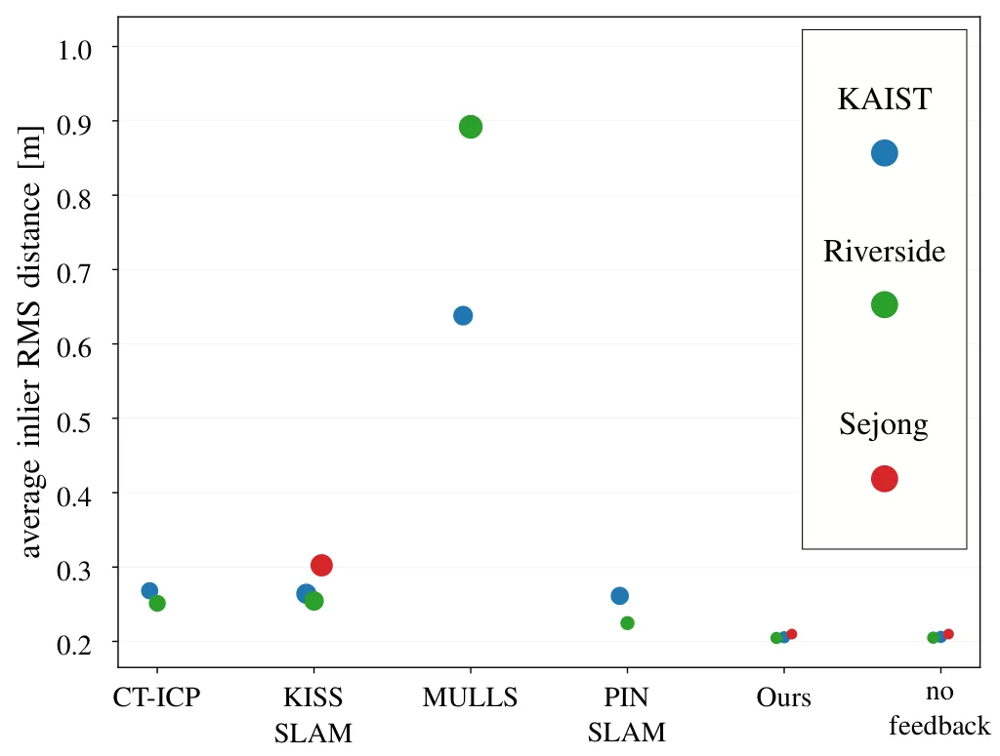
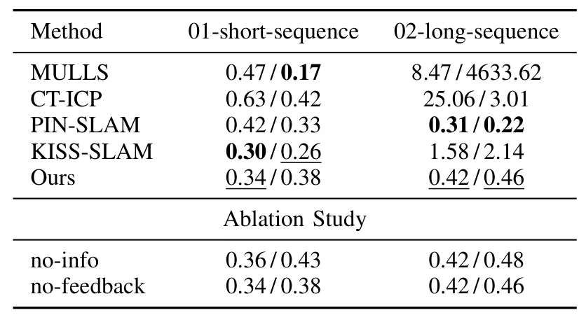
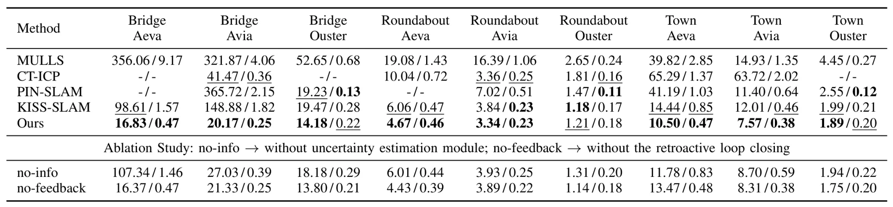
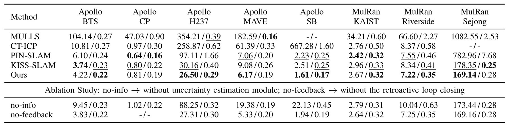

通过信息感知里程计与追溯式回环提升图优化 LiDAR SLAM 地图一致性Improving Map Consistency in Graph-Based LiDAR SLAM Through Information-Aware Odometry and Retroactive Loop Closure
直接命中 LiDAR SLAM、ICP 不确定性、位姿图和回环闭合，并将地图局部几何质量与轨迹误差分开评测；需核查信息矩阵计算开销、回环误检控制和代码可用性。
一句话工作总结
以几何相关 ICP 信息矩阵加权里程计，并在图优化后追溯挖掘漏检回环，直接优化重访区域地图一致性。
摘要
高质量地图是机器人导航与规划的基础，但较低的轨迹误差并不必然带来几何一致的地图，尤其在重访区域，漏检回环与残余漂移会造成局部错位。本文提出一套同时改善全局轨迹和局部地图质量的图优化 LiDAR SLAM 框架：高效估计与场景几何相关的 ICP 信息矩阵，对位姿图中的里程计约束进行原则化加权；以分层回环模块解耦地点识别和几何配准；再利用优化后的位姿图追溯恢复早先漏检的回环。作者还提出重访区域地图一致性评测协议。多数据集实验表明，系统在保持或改善全局轨迹精度的同时，持续提高重访区域的局部几何一致性。
High-quality maps are fundamental for robotics tasks such as navigation and planning. Although modern graph-based LiDAR SLAM systems achieve good trajectory accuracies, a low trajectory error alone does not guarantee geometrically consistent maps, particularly at revisit locations where missed loop closures and residual drift can produce local misalignments. In this work, we address the problem of jointly improving global trajectory estimation and local map quality in 3D LiDAR SLAM. We first propose a framework to efficiently estimate geometry-dependent information matrices for ICP, enabling principled weighting of odometry constraints in a pose graph. We then introduce a hierarchical loop-closure module that decouples place recognition from geometric registration, together with a retroactive loop-closure module that exploits the optimized pose graph to recover missed loop closures. We also propose an evaluation protocol to measure map consistency at revisit locations. We evaluate our SLAM system on several datasets against state-of-the-art LiDAR SLAM systems. Experimental results demonstrate global trajectory accuracies on par with or better than existing methods while consistently improving local geometric map consistency at revisit locations. These results suggest that coupling uncertainty-aware odometry with geometry-guided loop-closure refinement leads to more accurate trajectories and higher-quality maps.
中文解读摘录
图表/页面预览
{kind=link}

{kind=link}

{kind=link}

{kind=link}

{kind=link}

{kind=link}

{kind=link}
